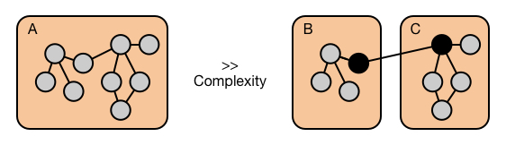
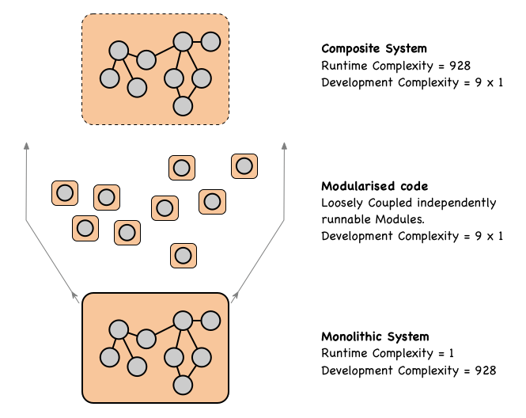

Low-maintenance, highly adaptive software eco-systems will be the essential foundations for tomorrow’s economically sustainable software eco-systems (i.e. Smart City and Industry4.0). Yet, as DARPA realise, today’s software systems fail to meet these challenges.
Modern-day software systems, even those that presumably function correctly, have a useful and effective shelf life orders of magnitude less than other engineering artefacts …
while an application’s lifetime typically cannot be predicted with any degree of accuracy, it is likely to be strongly inversely correlated with the rate and magnitude of change of the ecosystem in which it executes.
(DARPA BRASS -Building Resource Adaptive Software Systems - Initiative 2015).
After more than a decade into ‘virtualisation’, and more recently Containerisation, Microservices, BlockChain & AI; these simple(?) maintainability and evolvability goals are more illusive than ever.
The aim of DARPA BRASS challenge is to create software solutions that avoid obsolescence; software eco-systems that are able to run for more than 100 years. Such software eco-systems must be economically sustainable over these extended periods. To achieve this longevity, these software eco-systems must be able to cost-effectively adapt and evolve in response to unforeseen changes in environmental conditions. Such software eco-systems must be simple to maintain, or more probably, self-maintaining.
Why is this such a challenge?
While the inter-related concerns of structural Complexity and Change are challenges shared by all engineering disciplines; it is perhaps the fluidity and rate of change that uniquely differentiates software engineering; aligning it closer to Biological or Social Systems.
The principles for creating highly adaptive and self-sustainable systems are increasingly understood. These principles have been revealed by over 50-years of scientific enquiry into the nature of Biological, Social and Physical systems (i.e. Complex Adaptive Systems), and have driven a philosophical shift away from Newtonian reductionism to a more ‘Systemic’ world view that focuses on structural complexity, networks and patterns of organisation.
The following concepts will be familiar to some readers.
Modularity - All Complex Adaptive Systems (CAS) are composed of a hierarchy of structural layers; each layer internally modular. Why is this? Modularity makes complexity manageable; Modularity enables parallel work; and Modularity is tolerant of uncertainty. By “tolerant of uncertainty” we mean that particular elements of a modular design may be changed after the fact and in unforeseen ways: Design Rules, Volume 1 The Power of Modularity. To achieve this, the internal implementation details of each Module must be shielded from the external environment: the external environment being the aggregate of all other modules, the underlying runtime and higher level Services. The only permissible interactions between the Module, and its host Environment, is then via the Module’s published public API’s. Once achieved, anything that is not public can be changed at will; e.g. removing a private class from a package is invisible to any external module.
Cohesion - Systems evolve over time. To accomodate structural change Systems must localise the effects of structural chnage by maximising Cohesion: Things that are closely related, that must change in unison, that must evolve together, need to be colocated together within the same Module. Things that evolve at a different rates, and/or could be used separately in different runtime contexts, should be in separate Modules, and these Modules should be Loosely Coupled.
Loose Coupling - To allow substitution and interchangeability Modules must be loosely coupled. Critically this cannot be achieved if Modules refer to each other explicitly by a specific unique name and version. Rather, to enable substitution, Module relationships need to be expressed in terms of the Capabilities they expose to the environment, and what they Require from the environment. To allow the impact of changes to be determined, Modules should semantically version these Requirement and Capabilities (see - https://semver.org), see also https://www.osgi.org/wp-content/uploads/AgilityandModularity2014v21.pdf
Structural Hierarchy - Complex adaptive systems (CAS), including Ecosystems, Social Systems, Biological cells, and Financial Markets, are characterized by intricate hierarchical arrangements of boundaries and signals: Signals and Boundaries - John Holland. Boundaries encapsulate complexity, and the entities created by these Boundaries interact with each other via loosely coupled Signals. The introduction of Modularity at one structural layer introduces a new higher layer of abstraction. This process is iterative; by this we mean that a new boundary can be created to enclose a group of related Modules, thereby creating a super-Module: and so yet another layer of structural abstraction. The following questions apply at each layer of this hierarchy:
The familar example of the structural hierarchy created by OSGi™ is shown.
As will now be demonstrated, while new layers of structural Complexity are created by the use of modularity, the overall reduction in System complexity is profound. Also, these additional layers of structural complexity should be managed by appropriate Developer tooling, and shielded from Operations by runtime platforms designed to automatically Orchestrate & Assembly the highly Modular systems.
Intuitively one might expect software complexity to grow with respect to the number of links (i.e. links being lines of code calling a method or using a field) inside the code base. In the following diagram we see that module A has 9 internal links, hence a reasonable complexity measure might be proportional to 92. Meanwhile for the Modular alternative we see that the combined complexity estimate (Module B and C together) is 32 + 62, which is almost half. A more sophisticated approach to quantitatively determining software complexity was proposed by Halstead in 1977. Halstead proposed that software metrics should reflect the implementation or expression of algorithms, but be independent of their execution on a specific platform. Halstead appraoch aped Physics’ approach to the measurement of invariant properties of matter (like the volume, mass, and pressure of a gas) and the relationships between these propoerties (Boltzman Ideal Gas equation).
More sophisticated attempts

Qualitative measures of software complexity can be traced back to Scott Woodfield’s research in 1979: see An Experiment on Unit Increase in Problem Complexity. With the participation of 48 experienced developers, Woodfield conducted a series of experiment to investigate how different types of modularisation and comments relate to programmers’ ability to understand, correct and modify programs. Woodfield’s research is summarised by Robert Glass in his book Facts and Fallacies of Software Engineering sometimes referred to as Glass’s Law states:
For every 25% increase in problem complexity (F), there is a 100 percent increase in complexity (C) of the software solution.
As demonstrated in the blog post The Equation every Enterprise Architect Should Memorize - Roger Sessions, this expression can be recast into:
A Module with b functions is 10log(C) x log(b) / log(F) times more complex than a Module that contains just 1 of the functions.
Applying Glass’s complexity measure to the previous example: Module A with 9 functional units gives a value of 93.11 928, whereas the combined complexity of Modules B & C are 75 + 149.
So using Glass’s complexity measure the combined complexity of Modules B & C is ~1/4 of the complexity of the original Monolith. However we must also include the complexity introduced by the new composite (B+C). There is only 1 Monolith, however two MicroServices are requiredto create the functionally equivalent composite. Hence the new ‘composition layer’ is ~8 times more complex than the opaque Monolith. Complexities at each structural layer are additive, so the total complexity of the composite structure is 75 + 149 + 9 = 232: still substantially less than the Monolith (928).
To complete the logical exercise, lets what happens if we ignore any Cohesion concerns and break the Monolith into 9 isolated Modules with one function each. Now complexity of each Module is 1. However the complexity of the composite assembly is now 93.11 928.

Now complexity rather than being hidden within the Monolith (a significant Developer headache), is now - unless automatically managed by the runtime Platform - exposed to Operations and a critical Operational risk: i.e. the Microservices ‘Orchestration’ problem.
The following well know Law’s guide us to the root cause.
Gall’s Law: A complex system that works is invariably found to have evolved from a simple system that worked. A complex system designed from scratch never works and cannot be patched up to make it work. You have to start over, beginning with a working simple system.
Lehman’s Law: As a system evolves, its complexity increases unless work is done to maintain or reduce it.
How do we simply and efficiently manage structural Complex Systems as they inevitably adapt and evolve?
From an abstract logical Software design perspective …
As identified by [seminal paper][parnas] “On the Criteria To Be Used in Decomposing Systems into Modules” the impact of change on a Modular composite system is dictated by how the system was decomposed. If a small change in a single Module causes a cascade of many downstream changes in other modules; then Modules in the system are tightly-coupled. However if the change results in with minimal / no / downstream changes, then the Modules in the System are loosely-coupled. From the perspect of Software Systems, Parnas concludes
The existence of the hierarchical structure assures us that we can “prune” off the upper levels of the tree and start a new tree on the old trunk. If we had designed a system in which the “low level” modules made some use of the “high level” modules, we would not have the hierarchy, we would find it much harder to remove portions of the system, and “level” would not have much meaning in the system.
we must conclude that hierarchical structure and “clean” decomposition are two desirable but independent properties of a system structure.
Criteria To Be Used in Decomposing Systems into Modules and A Sketchy Evolution of Software Design.
However, real world software systems demonstrates that - as expect by results from CAS - runtime Hierarchy and Modularity not decoupled. i.e.:
the Microservices ‘Orchestration’ problem demonstrates that from a runtime perspective runtime Hierarchy and Modularity not decoupled.
The reason for this is easy to understand. The combined complexity of a collection of Modules is significantly lower than the monolith they replace; this is good for the Developer. However, if we decompose a complex software monolith into a set of loosely coupled independently deployable Modules; we must at runtime be able to combine the appropriate selection of Modules to recreate the desired Service that was previous provided by the monolith. The life-cycle and configuration of this new composite entity must also be managed. Hence modularity pushes some complexity to higher levels of the runtime structural hierarchy.
The complexity related to _assembly must be effectively by the runtime platform otherwise it is exposed to Operations.
These concepts are - in principle - well understood in the software engineeing domain and codified / communicated in a number of ways. For example; those familer with SOLID / Lean Agile methodologies will be familiar with the terminology.
Principles of package cohesion
Principles of package coupling
The SAP says that a stable package should also be abstract so that its stability does not prevent it from being extended. It also states that an unstable package should be concrete since its instability allows the concrete code within it to be easily changed.
The Total Cost of Ownership is simple a financial measure of how well Systems are designed to cope with ongoing Complexity & Change!
The longer the planned life-time of the System, more Agile the Business requirements, the more volatile the runtime environment the more costly Complexity becomes and more Critically modularity becomes. Furthermore, the higher the degree of Business Agility, the more adaptive the System requirements, the more volatile the Environment, the more Loose-Coupling needs to be driven down through the Structural Hierarchy. Again we see that runtime Hierarchy, Cohesion and Loose-Coupling are related concerns.
For businesses that require Agility and / or for System that require longevity and / or must operate in volatile environmenrts, properly implemented Modularity offers transformation costs savings. To achieve this potential, applications must be design to be optimally Modular, leveraging Open Industry Standards for Modularity, the runtime environment must fully shield Operations from the structural details of these composite / highly modular Applications, and ofcourse the runtime Environment itself must be Operationally simple to maintain and evolve over time.